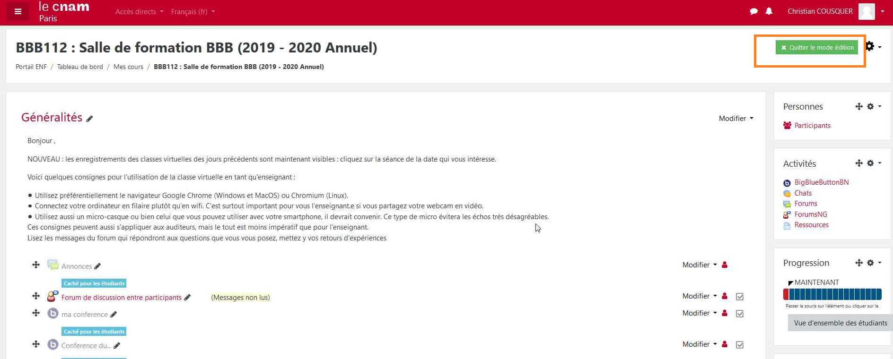
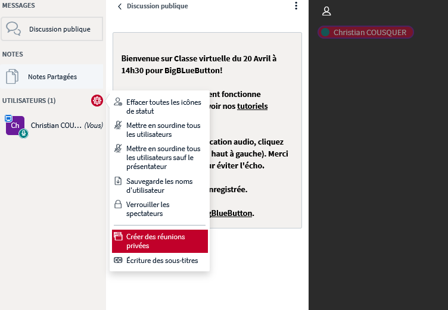

BBB Big Blue Button
L'outil de visioconférence interactive
de la plateforme d'enseignement du Cnam (Moodle)
Christian COUSQUER - Direction des usages du Numérique DN1 - AUPeN
Plan
- Préambule important
- L'interface
- L'interactivité
- Usages de Bbb
- Usages avancés de Bbb
- Questions - Discussion
Préambule
CE QUE N'EST PAS Bbb
Big Blue Button ne doit en aucun cas...
être utilisé pour enregistrer son powerpoint avec du son pour le mettre sur la plateforme d'enseignement Moodle,
pour faire un cours magistral comme en amphi,
pour communiquer avec plus de 20 auditeurs,
Nota Bene sur le nombre de participants
Les webconférences BBB sont limitées sous l’ENF à 50 participants. Ce seuil peut être modifié.
Il n’existe pas de seuil spécifique pour le nb de webcams actives par webconf. Il est par contre possible de limiter l’utilisation des caméras aux seuls modérateurs. Mais c’est peut-être extrême.
Big Blue Button est un outil de visioconférence
Doit être utilisé pour discuter avec des auditeurs autours de documents (powerpoints, pdfs, sites Web)
Pour créer de l'interactivité avec eux par le biais :
de la vidéo et du son ou de sondages rapides,
mais aussi de croquis ou d'annotations en direct.
Préambule n°2
Quand vous allez aller dans votre cours
Bbb ne sera pas activé.
C'est à vous de l'activer...
Pour l'activer, passez en mode "Edition" du cours

Ajouter Bbb à son cours
- "Ajouter une activité ou une ressource" dans une section du cours
- Sélectionnez "Big blue button" et validez
- De là, paramétrez-la et enregistrez l'activité,
- Le bouton de la connexion à votre Classe virtuelle sera disponible pour vos auditeurs
- Les auditeurs trouveront l’enregistrement au même endroit.
- La classe est réutilisable mais vous pouvez en créer une par séance: au choix
Entrons
à la decouverte de Bbb
L'interface de Bbb

Zone de gestion des utilisateurs
Partager un document, une vidéo, un site web
Tableau blanc
Pour commencer la séance : Enregistrez la.
Gérer globalement tous des utilisateurs
Mettre en sourdine tous les utilisateurs sauf le presentateur
Gérer un utilisateur en cliquant sur son nom
- Gérer son statut
- Le rendre muet si micro ouvert
- L'autoriser à parler
Terminer votre session en mettant fin à la réunion
Interactivité
Partage de document
Partage de powerpoint, de vidéo en ligne
Partage de documents
Conseil : ayez tous vos documents ouverts pour débuter une séance
Sondages
Tableau Blanc
Usages de Bbb
Recommandations
- Pas de longs enregistrements d’une heure ou plus.
- attente de l'enregistrement : temps d’encodage très long (nous renforçons les serveurs)
- Attention à la perte d’attention des auditeurs
- Penser votre cours de façon différente du cours en présentiel
- Séquencez-le en petites parties interactives
Règles à suivre si connexion mauvaise
Limiter les webcams allumées
Couper les micros
Donner la parole au fur et à mesure
Règles à suivre spécial COVID19
Pour éviter une surcharge des serveurs BigBlueButton (BBB) lors de la réalisation d’une classe virtuelle, il est recommandé :
- de n’utiliser que la caméra vidéo de l’enseignant. La vidéo d’un auditeur doit être active uniquement dans le cas d’un échange avec le groupe,
- de ne pas enregistrer la classe virtuelle sauf si une exploitation pédagogique est nécessaire,
- d’utiliser Teams pour un groupe supérieur à 50 personnes.
Usages avancés : réunions privées
Réunions privées

Paramétrages des réunions privées
Notes importantes
Tous les auditeurs entrent dans les salles de réunion avec le statut de modérateur ; la première personne à se connecter se voit attribuer le rôle de présentateur.
Les salles de réunion privées ne peuvent pas être enregistrées.
Le contenu des salles de réunion privée ne peut pas être transféré dans la salle principale.
Une fois que les salles de réunion privée ont été créées et démarrées, la durée ne peut pas être prolongée.
Intégrer Beecast dans une classe virtuelle BBB dans Moodle
Ajouter de l'animation de formation avec des outils en ligne
Créez des activités et faites participer vos apprenant·e·s en direct via QRCode ou code de session (rien à installer de leur part)
Exemple d'interactivité dans Beecast : nuages de mots
Note importante sur Beecast
Compte à créer sur www.beekast.com/fr
Une fois, votre compte Beecast crée, contactez Par_pedagotice@lecnam.net pour bénéficier pleinement de la licence Beecast pour l'enseignement : 27 modèles d'activités, jusqu'à 500 participants
Liens utiles
- Télécharger Chrome
- Tutoriel utilisation de Big Blue Button
- Tutoriel utilisation mediaserver pour déposer des présentations sonorisées
- Tutoriel du Lab'Sofa sur l'accès à Bbb
Autres outils
- Adobe connect/ Zoom.us / Teams : inconvenients pas de suivi auditeur (pb pour génerer attestations de connexion)
- Et toujours : Plan de continuité pédagogique http://r.cnam.fr/pcp